Universal pick one background for any product
The four shortlisted backgrounds were tested with the same model in 8 product colours: cream, jet black, gold, deep purple, teal, red, navy and silver. The pick is near-black with a soft velvet-plum glow from the top and a hint of petrol in the floor reflection. It is now the default on this page.
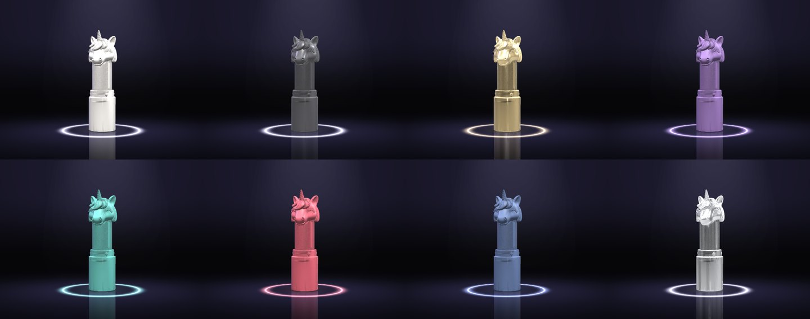
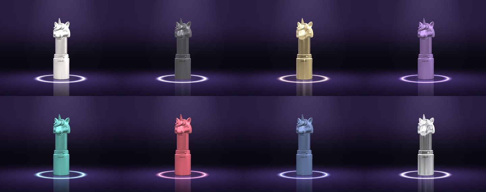
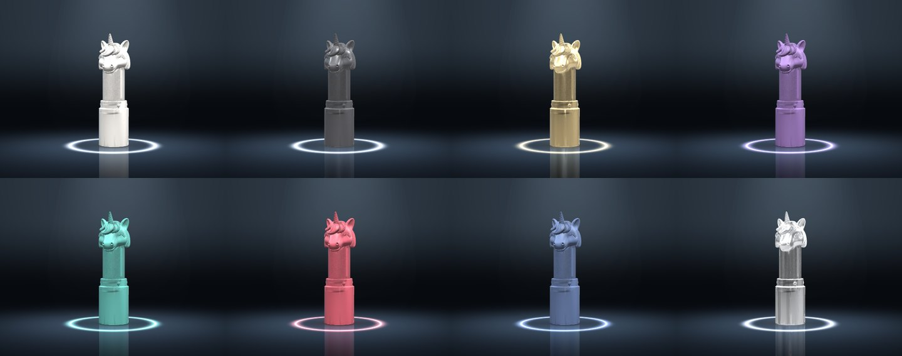
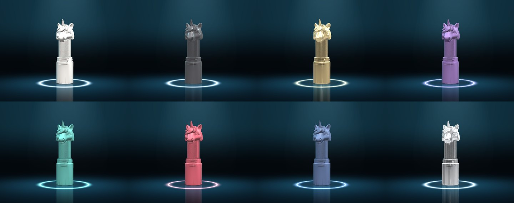
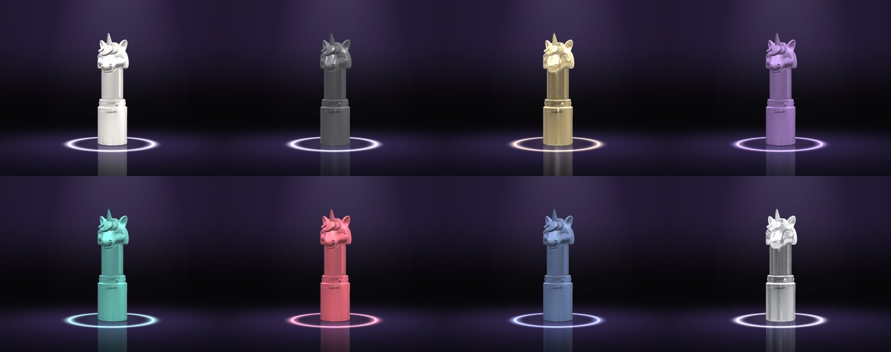
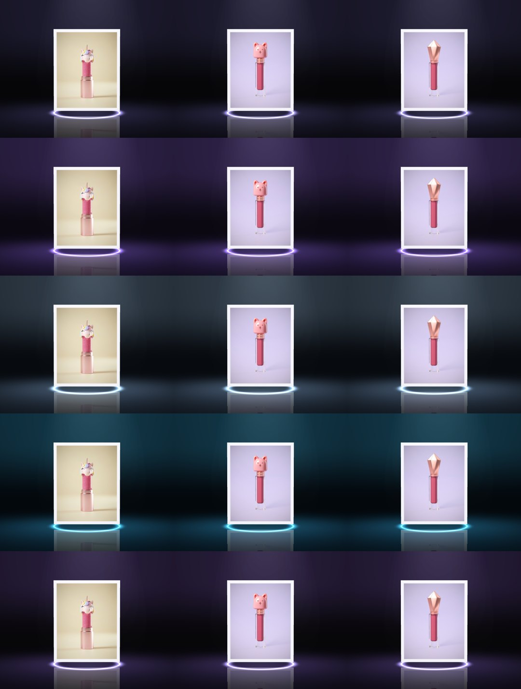
| Background | Weakest edge contrast | Average edge contrast | Weakest edge colour gap (ΔE) | Colour shift (ΔE, max) | Weakest ring contrast |
|---|---|---|---|---|---|
| Near-black | 2.34 (black) | 4.85 | 27.7 | 0.4 | 7.77 |
| Velvet plum | 2.13 (black) | 4.39 | 27.5 | 0.6 | 6.74 |
| Glacier | 1.93 (black) | 3.99 | 19.5 | 0.2 | 5.63 |
| Deep petrol | 2.04 (black) | 4.19 | 22.8 | 0.5 | 6.30 |
| Universal blend | 2.29 (black) | 4.74 | 27.9 | 0.3 | 7.31 |
- VerdictThe universal blend is the most even all-rounder. It matches plain near-black on separation, colour truth and ring contrast, and adds the plum warmth that makes it feel premium.
- Why not the othersGlacier and Deep petrol lift the background towards the product, so dark products blend in sooner. Velvet plum on its own is a little lower on every product.
- Still weakNo background gets a jet-black product to 3:1 at the edge (about 2.3:1 at best). It stays visible, but dark products would need a brighter rim light on that product.
Theme wall 16 dark backgrounds
Each tile is the real Keynote stage, rendered in that colour. Only the background, floor, light and ring change. The product keeps its true colours. Click a tile to try it on the live stage below.
Now
The live page at 1440px and 400px wide. More screenshots of the Studio and Gallery are in team-notes/design-options/now/.
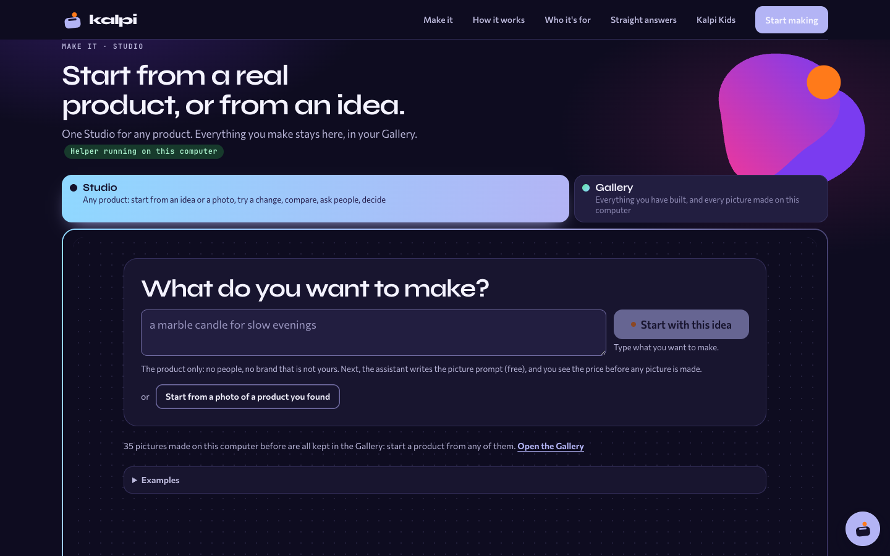
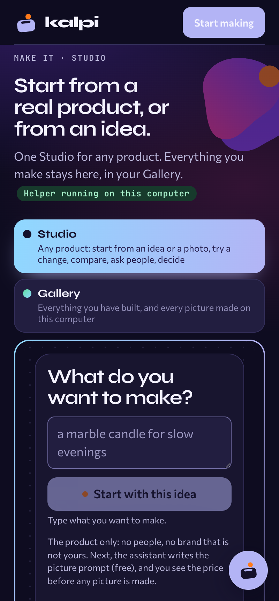
- What worksThe steps are clear, and the words are plain and honest about cost.
- What holds it backTwo large headings sit on top of each other. There is no product picture on the first screen. The empty frame looks unfinished.
- FeelIt looks like a developer tool, not a place where a seller sees her product come to life.
Keynote bold · 3D · the wow one
A dark studio stage. The seller's photo stands under a spotlight. A line of light scans up through it, and the photo becomes a real 3D product. That product then splits into three versions to compare. The 3D model is a real one Kalpi made, the unicorn lipstick.
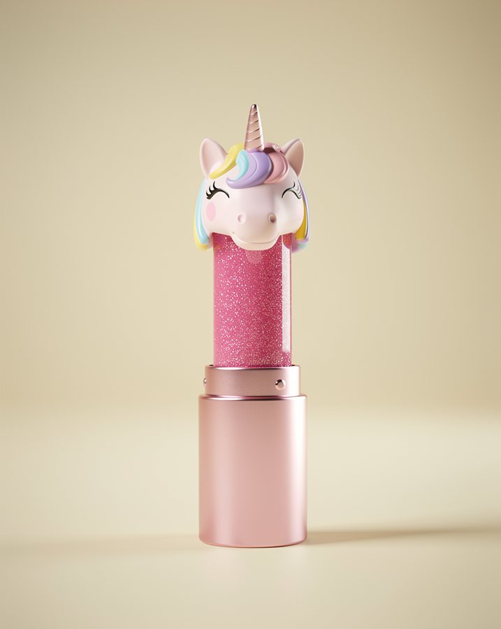
What do you want to make?
or start from a photo of a product you found
The assistant writes the picture prompt for free. You see the price before any picture is made. Generated pictures are concepts until a maker says yes.
Palette
Type
Inter Tight 600 for headings, capped at 28px. Inter 400/500 for everything else, 13–16px. A heading is never bigger than the product.
Spacing and density
Very airy. The first screen holds the stage, one caption line and one input. The tabs shrink to a small switch.
Pictures
The photo stands whole on a white mount, never cropped. Then the 3D product sits on a glossy floor with a soft reflection and a contact shadow.
Buttons
One white pill, "Start with this idea", inside the input. Everything else is a text link or a quiet ghost chip, such as Replay.
Empty and loading
It will stand here.
- What changesThe first screen becomes a lit stage with her real product as the hero. The big headings go, and so does the tool frame. One input with one button sits under the stage.
- Why it helps a sellerIn a few seconds she sees her photo become a product she can turn around, and then become versions to choose from. That moment is the whole promise of Kalpi.
- Trade-offIt is the most work to build, and it needs a 3D model, which costs a little per product. Older phones get a still picture instead. The dark stage also has to match the rest of the site.
Keynote variations
Five more layouts in the same style: a dark stage, a glossy floor, the glowing ring, and very few words. Each one is live, so move the mouse, drag, or click. The colour swatches change all of them at once.
Solo spotlight one product · big
One product, large and centred under the light. The versions are small swatches below it.
- What it isOne large product sits under the spotlight, with the versions as small swatches below it. Click a swatch, and a ring of light repaints the product from the floor up.
- Why it helps a sellerHer product fills the screen and looks its best. Switching versions in the same place makes small differences easy to see.
- Trade-offOnly one version shows at a time, so she can never see all three side by side.
Carousel turntable
The versions ride a slow, dark turntable. Click one to bring it to the front.
- What it isThe three versions ride a slow, dark turntable. Click one to bring it to the front, where a ring of light waits on the floor.
- Why it helps a sellerIt feels like turning real samples on a shop counter, and each version gets its turn in the light.
- Trade-offThe versions at the back are smaller and dimmer, and the slow turning means some waiting.
Split photo → 3D
Her photo on the left, the 3D product on the right. A ring of light carries one into the other.
- What it isHer original photo sits in a lit frame on the left, and the 3D product stands on the right. A ring of light travels from the photo to the product and builds it.
- Why it helps a sellerShe sees exactly what Kalpi made from her own photo, so she can trust the 3D view.
- Trade-offTwo things share the screen, so the product is smaller, and this layout does not show versions.
Scroll story scroll to play
Scrolling moves the camera through each step. Scroll slowly through this one.
- What it isScrolling moves the camera through the steps: her photo, the 3D product, one part changing colour, three versions, votes rising as bars of light, then the winner.
- Why it helps a sellerIt explains the whole of Kalpi in one scroll, which suits a first visit or the landing page.
- Trade-offIt tells a story rather than being a tool. It needs a long scroll, and the votes are sample numbers.
Floating glass premium · depth
Each version floats in its own dark glass panel. The panels tilt with the mouse.
- What it isEach version floats in its own dark glass panel above the floor. The panels tilt with the mouse, and hovering one brings it forward onto a ring of light.
- Why it helps a sellerIt feels the most premium, like a product launch, and it keeps all three versions in view.
- Trade-offThe glass and floating are decoration, not information. It is also the heaviest scene to draw.
Orbit premium · light · 3D cards
A bright studio. Versions A, B and C stand as printed cards on a turntable, and you drag to orbit between them. The form sits beside them, calm and plain.
What do you want to make?
or start from a photo of a product you found. You see the price before any picture is made.
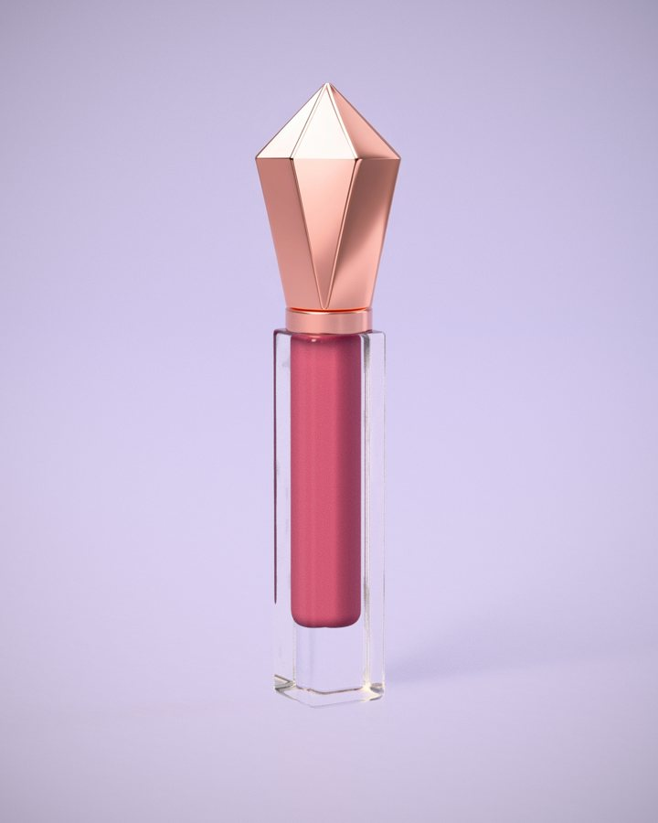
Palette
Type
Manrope 700 for headings, max 28px, and Manrope 400–600 for text. JetBrains Mono only for the small section label.
Spacing and density
Two columns: the form on the left, the stage on the right. Medium density, so it works on a laptop without scrolling.
Pictures
Each version is a white-bordered print with the whole photo inside. Soft shadows sit under each card on a pale floor.
Buttons
One solid indigo button with a soft coloured shadow. The arrows are small white circles.
Empty and loading
- What changesThe page turns light and calm. The tool frame becomes a two-column screen, and the versions get their own 3D turntable.
- Why it helps a sellerComparing A, B and C feels like picking up real samples. The light background shows true product colour.
- Trade-offLess drama than A. The light look breaks from the dark landing page, so the two would need to meet in the middle.
Paper quiet · premium · no 3D
An editorial, gallery-wall feel. Product photos sit in white mounts, like prints. Small serif headings and lots of space. It is the calmest option and the fastest to build.
What do you want to make?
or start from a photo of a product you found
35 pictures you made before are in the Gallery.
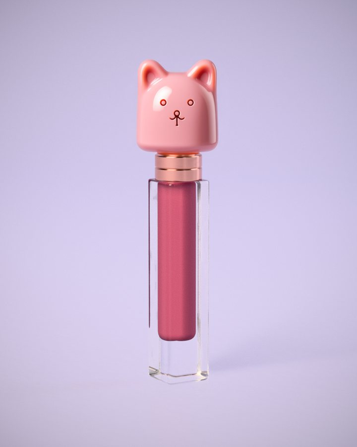
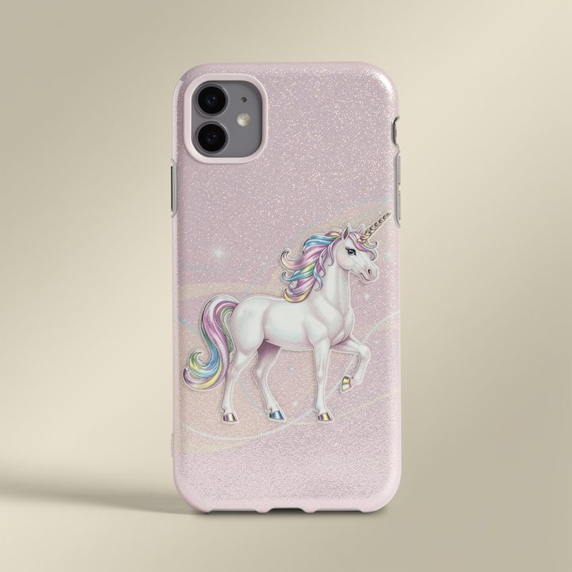
Palette
Type
Instrument Serif for headings, at 36px or less. Inter for text and buttons. The serif makes it feel premium without large sizes.
Spacing and density
Generous margins, thin lines and no boxes inside boxes. Tabs become underlined words.
Pictures
White mounts with 8% padding. Each mount takes its photo's own shape, so square and portrait photos both show whole, with no bands.
Buttons
One near-black pill that turns plum on hover. Links are underlined words.
Empty and loading
Your first will hang here.
- What changesDark purple becomes warm-neutral paper. Big display type becomes small serif headings. The photos move up to the first screen.
- Why it helps a sellerIt feels like a boutique buyer's desk: calm and serious about her product. It also prints and screenshots well for sharing.
- Trade-offThere is no wow moment, and it could feel plain next to tools with motion. Kalpi's playful brand colours mostly disappear.
Fan bold · rich colour · light 3D in CSS
Deep aubergine with a coral-to-magenta button. The three versions fan out like a hand of cards. Hover the fan to spread it, and hover a card to lift it.
What do you want to make?
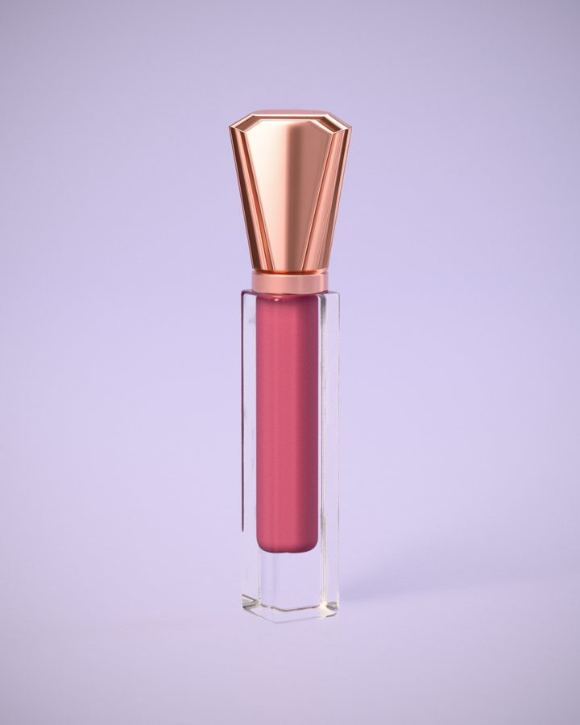
C · Gold capPalette
Type
Bricolage Grotesque 600 for headings, at 32px or less, which gives character without size. DM Sans for text.
Spacing and density
Two columns, with the cards breaking slightly out of their space. Tight and lively, but still with one clear path.
Pictures
White cards with the whole photo inside, on a soft lilac backing. Cards tilt in 3D, but the photo is never cut.
Buttons
One gradient button, magenta to coral, with a warm glow. It is the only coloured button on the screen.
Empty and loading
Type an idea to deal them.
- What changesThe colours stay close to Kalpi's brand but grow richer. The tool frame goes, and the versions become a tactile fan.
- Why it helps a sellerIt feels fun and confident, like a product launch. "Pick a card" makes comparing versions instant.
- Trade-offIt is louder, and strong colour can fight with the product photos. The fan works best with exactly three versions.
Fixes for any option
Small things I saw on the live page. Each one is worth doing whichever direction you pick.
- Some pictures can still be cropped. The default rule fills the frame and cuts the edges. Only the source pictures are switched to "contain". Use
object-fit: containeverywhere a product is shown.kalpi-vote.html·.pic > img(line 125) - Lavender bands under square pictures in the Gallery. Square photos, like the phone cases, sit in a 4:5 frame with a lavender fill below them. Fill the frame with a neutral that matches the photo backdrop, or let each card take its picture's own shape.
kalpi-vote.html·.pic.msrc { background: #e9e4f7 }and.gal .pic.msrc { aspect-ratio: 4/5 } - Gallery cards don't line up. One-line titles make shorter cards, so the Save buttons sit at different heights in the same row. Pin the button to the bottom of the card (flex column,
margin-top: auto).kalpi-vote.html· Gallery card markup inshelf(), grid.gal - The status line is cut off with "…". "VOTES ARE A SIMULAT…" and "THE IMAGE SERVICE T…" are truncated in tiny uppercase mono. Use sentence case at 12px, and let the line wrap or shorten the words.
kalpi-vote.html·.sfoot,.sfoot span(lines 67 and 272) - The main button looks broken before you type. While disabled, it fades to 50% and keeps its orange dot, so it reads as an error. Keep it at full colour with a clear "Type an idea first" hint, or use a calm disabled style without the dot.
kalpi-vote.html·.btn:disabled,.btn.pri .dot - Empty dark space under the Studio. The frame is at least 720px tall, so the short start screen leaves a large dotted gap. Size the frame to its content, or make the start screen fill it.
kalpi.html·.kx-frame iframe { height: max(720px, …) } - The helper badge looks like debug output. The green mono pill is pushed 4px right of the sentence and wraps onto its own line. Use a small dot with plain words in the body font, aligned to the text.
kalpi.html·.kx-state,.kx-state.on - Mismatched tabs and stacked headings. The Studio tab is twice as wide as Gallery, and each tab has its own gradient. Then "What do you want to make?" repeats the section heading at the same large size. Use one small tab switch and one heading. Also hide the textarea's resize grip with
resize: none.kalpi.html·.kx-tabs,.kx-h·kalpi-vote.html·.start h1,textarea.fld
Mock-ups only. Nothing here touches the product files. The 3D model and photos are Kalpi's own pictures from earlier runs, copied into team-notes/design-options/assets/.